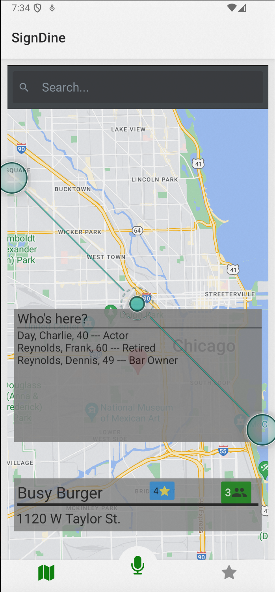
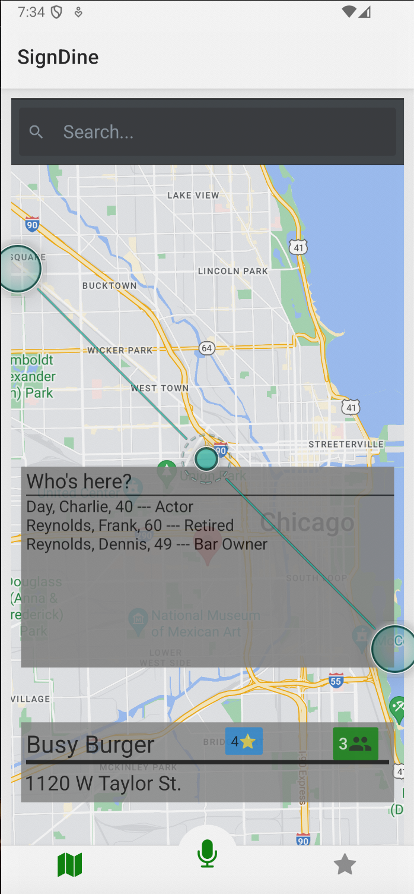
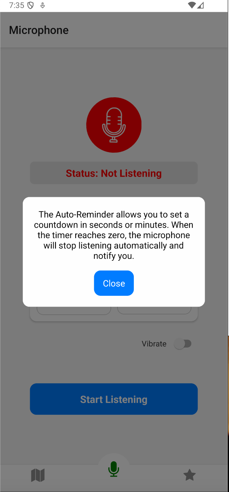
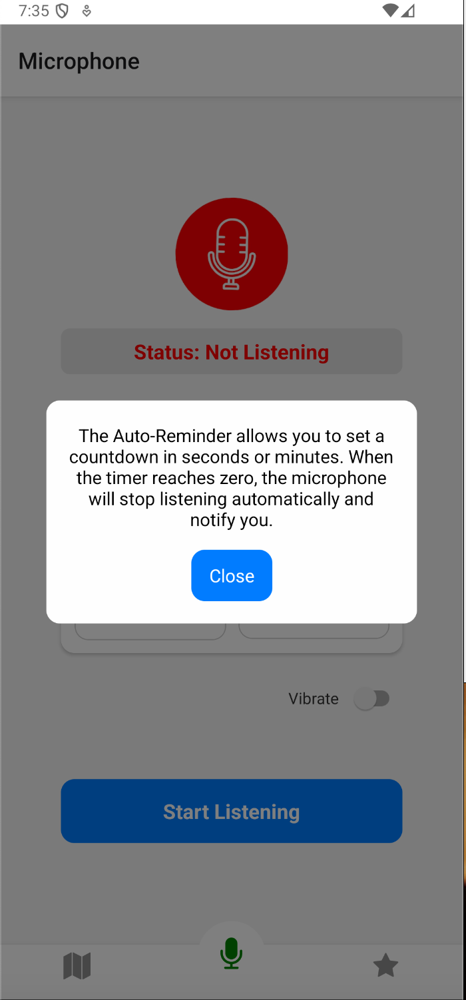
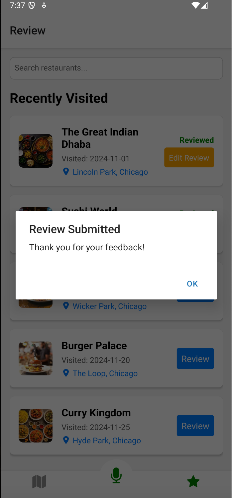
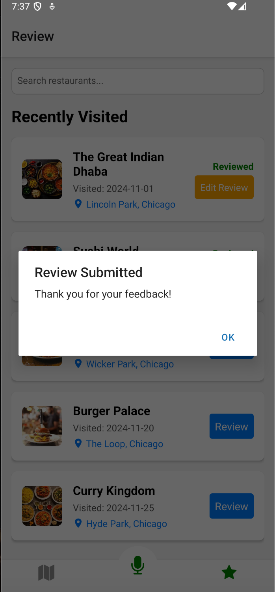

The home page features a search bar and an interactive map. When users search for a restaurant, the map dynamically pans and zooms to the restaurant’s location, highlighted by a marker. The restaurant’s name, rating, and the number of Deaf individuals dining there are displayed below the map.
One of the most important user goals was to be able to foster a sense of community when going out to eat. So, tapping the group icon on the restaurant card opens a modal pop-up with details such as age and occupation of the Deaf individuals present, promoting social inclusion. Users can also interact with the map directly, ensuring user control and flexibility.
Our interview participants also expressed a desired to avoid spending too much time on their phone. So, we wanted our application to be as easy to learn as possible. To do this, we used clear mappings from icons to functionality.
 

 
